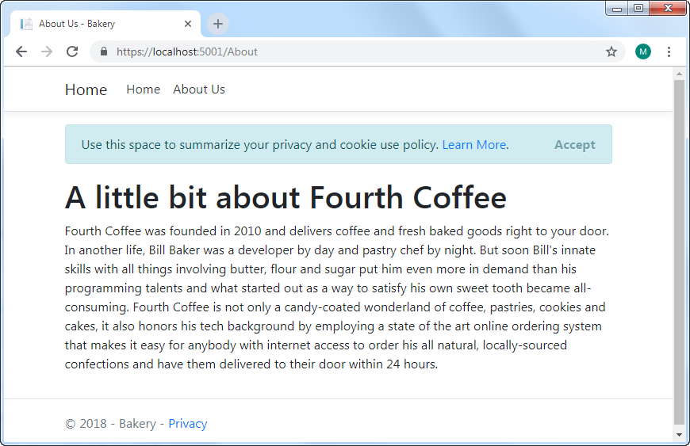
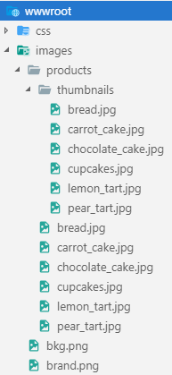
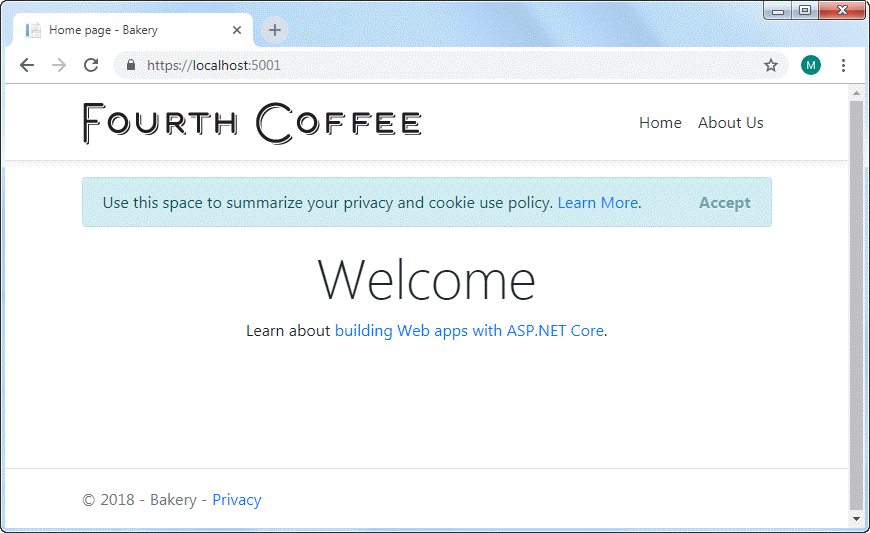

在本部分中，您将添加“关于”页面，并使用标签助手从主页提供指向该页面的链接。 您将使用 ASP.NET Core 框架系统创建页面，该页面在 VS Code 中由终端中执行的命令调用。
如果该应用程序仍在上一部分中运行，则可以打开另一个终端 (Ctrl+Shift+')，也可以按 Ctrl+C 关闭 Web 服务器。 完成此操作后，执行以下命令：
dotnet new page --name About --namespace Bakery.Pages --output Pages该命令生成带有 PageModel 文件的 Razor Page。 您需要指定名称空间，否则将使用 MyApp.Namespace 的默认值。 同样，如果不将 Pages 目录指定为输出位置，则页面将在执行命令的文件夹中生成。
确认页面创建成功后，打开About.cshtml 文件 (内容页面), 并将其内容修改为以下内容：
@page
@model Bakery.Pages.AboutModel
@{
ViewData["Title"] = "About Us";
}
<section id="main">
<h1>A little bit about Fourth Coffee</h1>
<p>
Fourth Coffee was founded in 2010 and delivers coffee and fresh baked goods right to your door.
In another life, Bill Baker was a developer by day and pastry chef by night.
But soon Bill's innate skills with all things involving butter, flour and sugar put him
even more in demand than his programming talents and what started out as a way to satisfy
his own sweet tooth became all-consuming. Fourth Coffee is not only a candy-coated wonderland
of coffee, pastries, cookies and cakes, it also honors his tech background by employing a state
of the art online ordering system that makes it easy for anybody with internet access to
order his all natural, locally-sourced confections and have them delivered to their
door within 24 hours.
</p>
</section>
这是“网页”模板中的原始内容。 唯一的不同是文件顶部的 @page 指令，指示这是 Razor 页面，@model 声明，以及使用 ViewData 属性保存页面标题。 在网页中，这是由 PageData 属性处理的，该属性具有基于dynamic类型的版本。 Razor Pages背后的团队在很大程度上不再使用dynamic类型
添加导航
主站点导航位于 布局页面 中，该页面充当引用该页面的所有页面的模板。 要对其进行更改，请打开 Pages/Shared 文件夹中的 _Layout.cshtml 文件。 找到如下所示的代码行：
<li class="nav-item">
<a class="nav-link text-dark" asp-area="" asp-page="/Index">Page1</a>
</li>
<li class="nav-item">
<a class="nav-link text-dark" asp-area="" asp-page="/Index">Page2</a>
</li>
它们从第30行开始。对其进行如下更改：
<li class="nav-item">
<a class="nav-link text-dark" asp-page="/Index">Home</a>
</li>
<li class="nav-item">
<a class="nav-link text-dark" asp-page="/About">About</a>
</li>
运行应用程序 (dotnet run) 并导航到 https://localhost:5001 。 然后单击关于链接以确保导航正常。 您应该到达刚刚创建的页面：

链接是由标签助手生成的。 这些是旨在针对 HTML 中特定标签的组件。定位标签助手 将 HTML 定位为 a 元素。
您没有提供 href 属性指向内部页面，而是提供了 asp-page 属性，该属性采用页面相对于根 Pages 文件夹的路径。 框架为生成的超链接构造正确的 URL 。
原始标签帮助器中的 asp-area 属性分配了一个空字符串。 在此示例中，您不使用区域，因此已删除该属性以减少混乱。
最后
最后，在本部分中，您将对布局页面进行一些微调，以包括品牌形象并添加一些样式。 您可以从我在 GitHub 上托管的 原始面包店模板 中获取图像文件。
在 wwwroot 文件夹中创建一个名为 images 的文件夹。 在其中创建另一个名为 products 的文件夹，在其中创建另一个名为 thumbnails 的文件夹。 然后将图像复制到正确的文件夹。 最终的文件夹结构应如下所示：

用 navbar-brand CSS 类更改锚标记，以包括图像，如突出显示的部分所示：
<body>
<header>
<nav class="navbar navbar-expand-sm navbar-toggleable-sm navbar-light bg-white border-bottom box-shadow mb-3">
<div class="container">
<a class="navbar-brand" asp-page="/Index">
<img class="img-fluid" src="/images/brand.png" alt="Fourth Coffee" />
</a>
<button class="navbar-toggler" type="button" data-toggle="collapse" data-target=".navbar-collapse" aria-controls="navbarSupportedContent"
aria-expanded="false" aria-label="Toggle navigation">
<span class="navbar-toggler-icon"></span>
</button>
最后，在 wwwroot/css 中找到的 site.css 文件中添加以下样式：
.navbar-nav {
justify-content: flex-end;
}
Bootstrap 4 使用 CSS Flexible Box Layout（也称为 FlexBox ）来控制布局，而不是使用先前版本的 Bootstrap 中的 CSS float。
现在，使用 Ctrl+R 清除样式表的所有缓存版本，以在浏览器中刷新页面。 它看起来应该像这样：

小结
在本节中，您已经了解了如何使用脚手架命令添加 Razor 页面。 您还使用了定位标记帮助器来调整网站的导航，并在样式表中添加了一些样式。 在下一节中，您将开始通过为应用程序创建模型并添加 Entity Framework Core 来处理数据。
进一步阅读
下一步: 建立模型
上一步: 入门